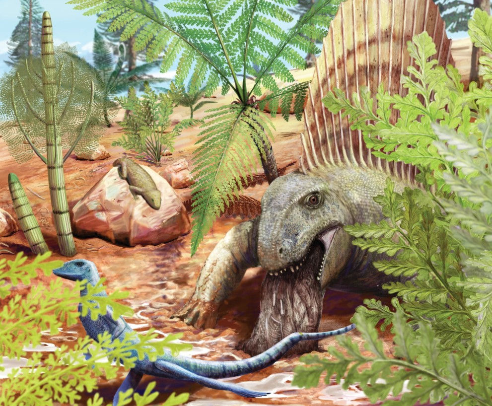
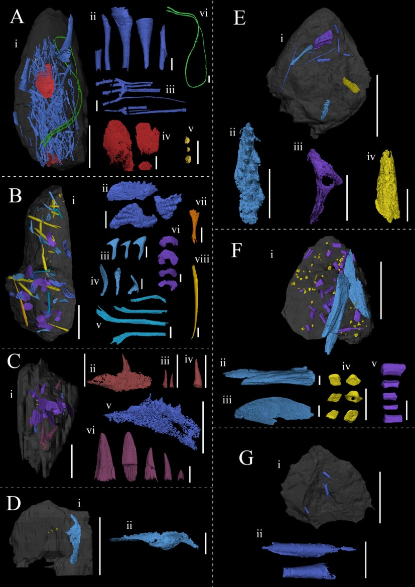

Arnaud Rebillard
Early career researcher in palaeontology, focusing on fossilised digestive remains (bromalites)
Early career researcher in palaeontology, focusing on fossilised digestive remains (bromalites)
Early career researcher in palaeontology, focusing on fossilised digestive remains (bromalites)

A fossilised vomit from a land-dwelling predator was found at the Early Permian Bromacker locality (Thuringia, Germany)

Coprolites from the Middle to Late Devonian Sula River locality (Arkhangelsk oblast, Russian Federation) reveal a complex trophic web